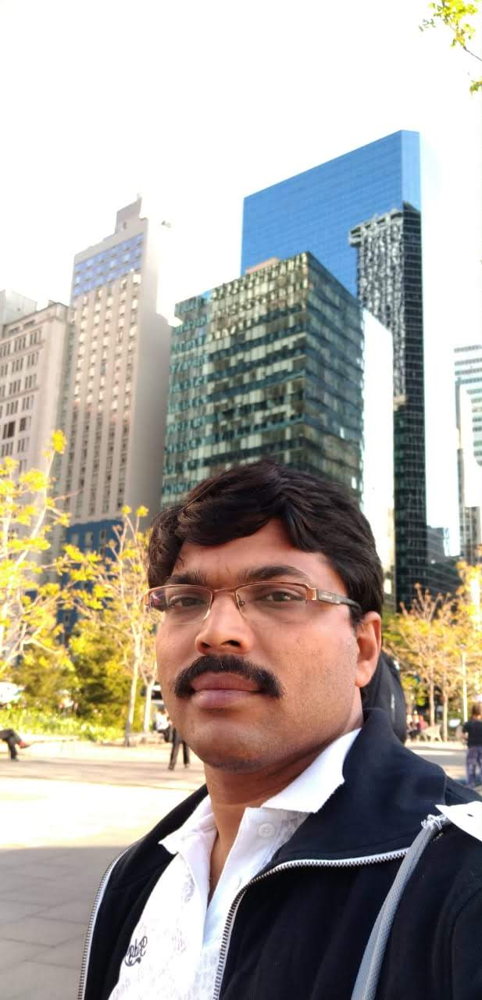

Senior Scientist, TCS Research
Hyderabad
I am a research scientist @ TCS Research, with interesets in computer vision and natural language processing areas. Particularly, I am working on improving the trustworthy aspects of AI models which includes robustness of the models against adversarial attacks, explainability, bias and fairness, and privacy. My previous experience include development of image processing algorithms, wireless signal processing, porting and optimization of video and audio codecs to DSP processors, Programming of Embedded microcontrollers, I2C, PWM, USART, ADC Interfaces, Porting applications to Beagle boards, ARM based developement boards.
 Google Scholar | SemanticScholar | DBLP
Email: srini[dot]chalamala[at]gmail[dot]com
Publications:
A Robust Method to Protect Text Classification Models against Adversarial Attacks Bala Mallikarjunarao G, Srinivasa Rao Chalamala, Ajeet Kumar Singh.
FLAIRS 2022
Federated learning to comply with data protection regulations.
Srinivasa Rao Chalamala, Naveen Kumar K, Ajeet Kumar Singh, Krishna Mohan C.
CSI Transactions on ICT 2022
Interpretable and Robust Face Verification.
Preetam Prabhu Srikar Dammu, Srinivasa Rao Chalamala, Ajeet Kumar Singh.
PSTCI@CIKM 2021
Explainable and Personalized Privacy Prediction.
Preetam Prabhu Srikar Dammu, Srinivasa Rao Chalamala, Ajeet Kumar Singh.
PSTCI@CIKM 2021
Secure and Privacy Preserving Method for Biometric Template Protection using Fully Homomorphic Encryption.
Arun Kumar Jindal, Imtiyazuddin Shaik, Srinivasa Rao Chalamala, Rajan MA, Sachin Lodha.
TRUSTCOM 2020
Securing Face Templates using Deep Convolutional Neural Network and Random Projection.
Arun Kumar Jindal, Srinivasa Rao Chalamala, Santosh Kumar Jami.
ICCE 2019
A Fuzzy Approach to Mute Sensitive Information in Noisy Audio Conversations.
Imran Shaik, Bala Mallikarjunarao G, Srinivasa Rao Chalamala, Sunil Kumar Kopparpu.
ACL 2019
Biometric Template Protection Through Adversarial Learning.
Santosh Kumar Jami, Srinivasa Rao Chalamala, Arun Kumar Jindal.
ICCE 2019
Face Template Protection Using Deep Convolutional Neural Network.
Arun Kumar Jindal, Srinivasa Rao Chalamala, Santosh Kumar Jami.
CVPRW 2018
A Probabilistic Approach for Human Action Recognition Using Motion Trajectories.
Srinivasa Rao Chalamala, Prasanna Kumar.
ISMS 2016
A Symbol Based Watermarking Approach for Spread Spectrum Audio Watermarking Methods.
Bala Malliarjunarao, Srinivasa Rao Chalamala
ISMS 2016
Local Binary Patterns for Digital Image Watermarking.
Srinivasa Rao Chalamala,Krishna Rao Kakkirala.
AIMS 2015
Enhanced face recognition using Cross Local Radon Binary Patterns.
Srinivasa Rao Chalamala, Santosh Kumar, Yegananarayana B.
ICCE 2015
Analysis of wavelet and contourlet transform based image watermarking techniques.
Srinivasa Rao Chalamala, Krishna Rao Kakkirala, Bala Mallikarjunarao.
IACC 2015
DWT-SVD based blind audio watermarking scheme for copyright protection.
Krishna Rao Kakkirala, Srinivasa Rao Chalamala, Bala Mallikarjuna Rao
ICALIP 2014